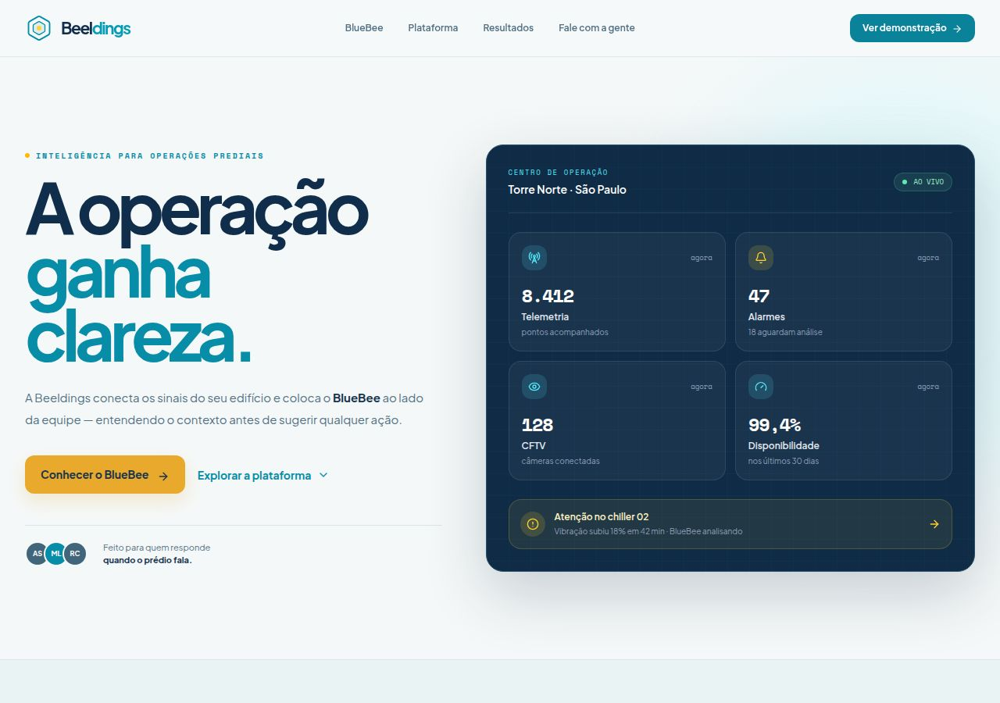
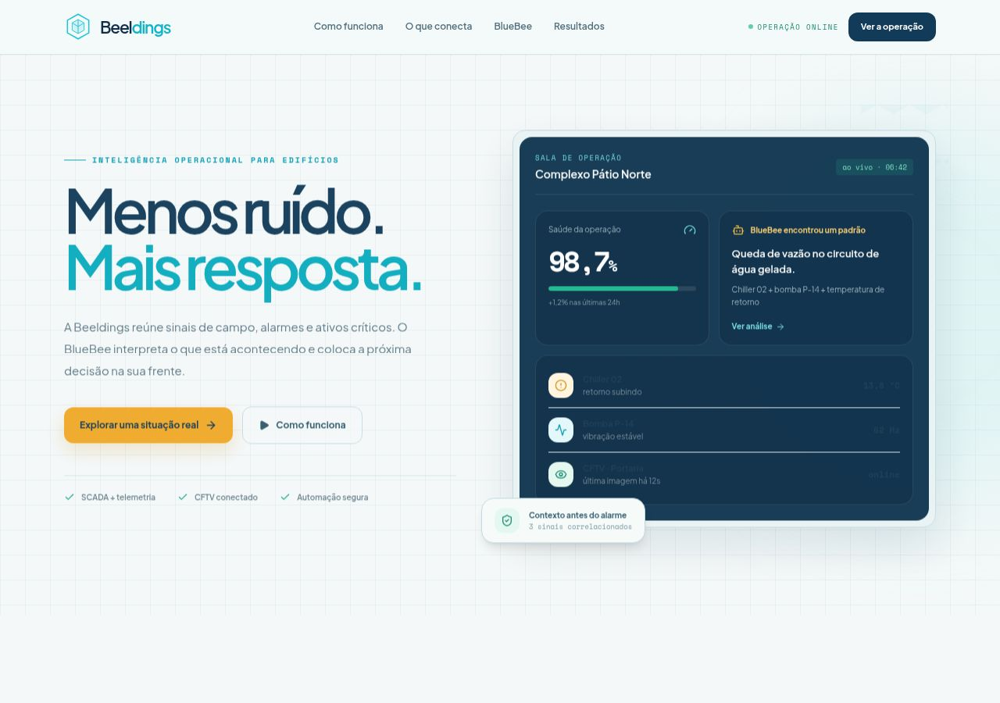
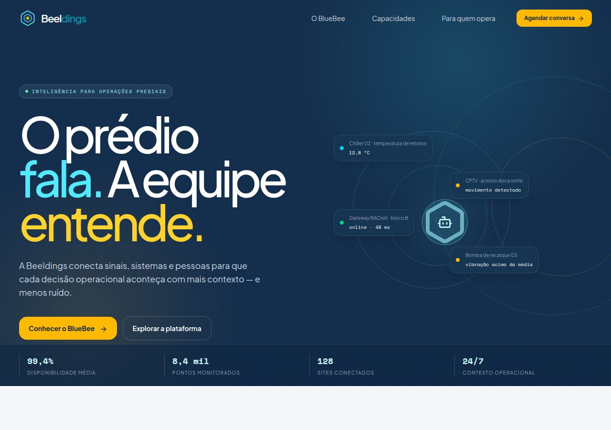
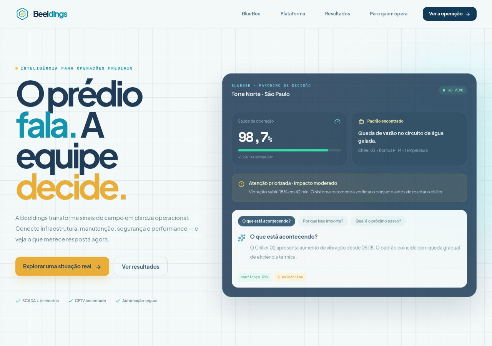

◈
Beeldings
Documento para decisão • Agosto de 2026
Quatro caminhos para apresentar o Beeldings.
Alternativas de layout para um portal institucional e comercial, com o BlueBee como agente de inteligência operacional.
Objetivo do material
Comparar quatro direções visuais antes da construção do portal definitivo, facilitando a escolha da narrativa que melhor representa a empresa.
As imagens mostram a abertura de cada proposta. As quatro páginas foram pensadas para continuar com seções, demonstrações e chamadas para contato.
Protótipo visual • não é ainda o portal final
Beeldings + BlueBee
Visão geral
O que as quatro opções têm em comum
Todas partem da mesma identidade e podem evoluir para o portal definitivo sem perder consistência.
01
Marca e narrativa
Beeldings como marca principal e BlueBee como agente de IA que traduz sinais operacionais em contexto e próximos passos.
02
Identidade visual
Azul operacional, ciano, âmbar e geometria hexagonal discreta, mantendo conexão com a identidade já criada.
03
Experiência
Landing pages ricas e roláveis, com CTAs, demonstrações visuais, navegação clara e comportamento responsivo.
04
Aplicação prática
Telemetria, alarmes, disponibilidade, ativos críticos e resposta operacional aparecem como benefícios concretos.
05
Tom de comunicação
Português do Brasil, linguagem acessível para gestores e equipes técnicas, sem reduzir a complexidade do produto.
06
Próximo passo
Escolher uma direção para aprofundar conteúdo, provas, navegação, conversão e a construção do portal final.
Preferência para aprofundamento
Marque uma opção para orientar a próxima etapa.
□ 1 — Narrativa □ 2 — Prova operacional □ 3 — Institucional □ 4 — Consolidada
Opção 1 • BlueBee como parceiro de decisão

Prévia do hero — a operação ganha clareza ao lado do BlueBee.
Direção narrativa
BlueBee protagonista
Apresenta o produto como uma transformação de dados dispersos em decisões claras.
- BlueBee conduz a narrativa da página.
- Linguagem mais humana e consultiva.
- Demonstra como a IA interpreta, explica e sugere ações.
- Transmite inovação sem parecer apenas um chatbot.
Ponto forteDiferencia melhor o Beeldings pela inteligência artificial.
Indicado paraApresentações que precisam explicar a proposta de valor e gerar curiosidade pela tecnologia.
Opção 2 • Foco em resultados e controle

Prévia do hero — menos ruído, mais resposta, com evidências no painel.
Direção comercial
Prova operacional
Mostra primeiro os resultados e a aplicação prática da plataforma no dia a dia.
- Indicadores, alarmes e disponibilidade em destaque.
- Demonstração visual do fluxo entre sinal, análise e ação.
- BlueBee integrado à rotina operacional.
- Comunicação direta para gestores e equipes técnicas.
Ponto forteFacilita apresentações comerciais baseadas em benefícios concretos.
Indicado paraReuniões com clientes que querem entender rapidamente o ganho operacional e o retorno da solução.
Opção 3 • Visão institucional premium

Prévia do hero — o prédio fala, a equipe entende.
Direção institucional
Visão institucional
Posiciona o Beeldings como a camada de inteligência dos edifícios.
- Apresentação mais ampla e premium.
- Conecta infraestrutura, operação, manutenção e segurança.
- BlueBee aparece como inteligência contextual da plataforma.
- Linguagem adequada para clientes, parceiros e apresentações institucionais.
Ponto forteFortalece a marca Beeldings e passa maior percepção de empresa e plataforma.
Indicado paraUm posicionamento corporativo de longo prazo, com foco em autoridade, escala e visão de mercado.
Opção 4 • Direção consolidada

Prévia do hero — o prédio fala, o BlueBee organiza a resposta e o resultado aparece na operação.
Direção recomendada
Institucional com prova
Une a autoridade da visão institucional à demonstração concreta de como a inteligência operacional gera valor para o cliente.
- Preserva a base premium e corporativa da Opção 3.
- Mostra o BlueBee como parceiro de decisão, não apenas como IA.
- Conecta sinais, evidências, prioridade e próximo passo.
- Coloca Redução de Custo como consequência potencial da operação mais previsível.
Ponto forteEquilibra posicionamento de marca, inovação e valor percebido em uma única narrativa.
Indicado paraO portal definitivo, apresentações executivas e conversas comerciais que precisam unir visão de longo prazo com evidência operacional.